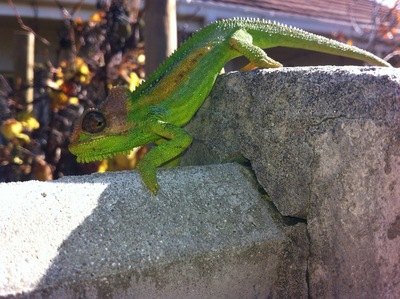
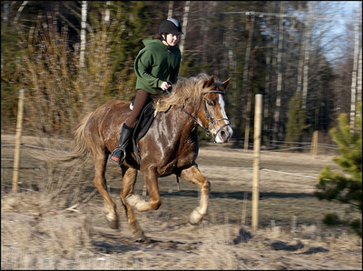
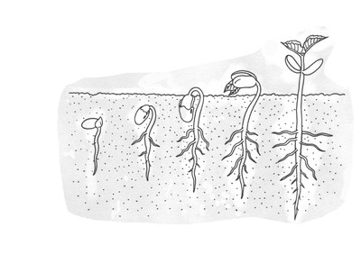
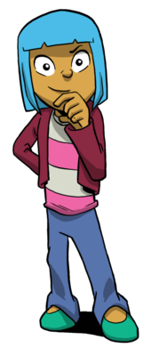

Wat is 'n nie-lewende ding? Wat beteken dit as iets nie-lewend is?
'n Rivier lyk of dit beweeg, kan ons daarom sê dat 'n rivier lewend is?
Is die plante wat ek uit Gogo se tuin eet, lewend of nie-lewend?
Hoe weet ek of die boontjie-sade van Gogo se tuin lewend of nie-lewend is?
'n Hoendereier lyk of dit nie-lewend is, maar dan broei daar 'n kuiken uit. Is die eier lewend of nie-lewend?
Inleiding tot die onderwerp
In hierdie eenheid sal leerders leer wat alle lewende dinge in gemeen het. Die fokus moet nie wees op die memoriseer van feite en definisies nie, maar eerder op die aktiwiteite wat prosesseringsvaardighede soos: Oberveer verskille, sortering en klassifisering, beskrywing en tekening gebruik. As onderwyser moet jy die nodige taalkonsepte aanleer wat jy nodig het om oor hierdie konsepte te praat. Selfs as leerders die regte woord gebruik, mag die betekenisse van daardie woord verskil vir elke leerder. Dit is veral belangrik om die wetenskaplike terme vir die sewe lewensprosesse korrek te gebruik en elke proses en die woord se betekenis akkuraat te verduidelik.
Alhoewel die meer tegniese terme moontlik toevallig aan leerders bekendgestel kan word, vereis CAPS dat die sewe lewensprosesse as volg genoem word: beweging, voortplanting, sensoriese waarneming, voeding, asemhaling, ontlasting en groei. Leerders moet hierdie prosesse verstaan en kan onderskei tussen lewende en nie-lewende dinge. Die voorstel is dat onderwysers die woorde uitstal: knip gekleurde A4-bladsye in die lengte in die helfte, skryf of druk die prosesse op die stroke en plak dit teen die muur in die vorm van 'n breinkaart. Skryf: Die Sewe Lewensprosesse in die die middel van die breinkaart. Laat leerders tekeninge van elke proses, of interessante feite, bysit soos julle elke proses bespreek en voltooi sodoende die breinkaart deur die loop van die afdeling.
Lewende dinge
Daar is verskillende soorte lewende dinge. Dit is maklik om te besluit of sekere dinge lewend of nie-lewend is nie; sommige ander goed is moeiliker om te klassifieseer as lewend of nie-lewend.
Wat is lewend en wat is nie-lewend?
INSTRUKSIES
Kyk na hierdie foto's en besluit watter van hierdie dinge jy dink lewend en watter nie-lewend is.
Maak 'n ✔ langs die lewende dinge en 'n ✗ langs die nie-lewende dinge.
Bespreek jou keuse met jou klas sodra jy klaar is.
Dis is nie altyd maklik om te besluit of iets lewend of nie-lewend is nie. Baie keer kan goed wat lyk asof dit nie-lewend is, weer lewendig word. Ander dinge soos riviere en grond is nie-lewende dinge, maar mense sê dat die "grond lewend" is of hulle praat van die "lewende waters" omdat daar so baie lewende dinge in die grond en water bly. Dit kan mens bietjie deurmekaar maak, né?
Kyk mooi na die lewende dinge in die foto's. Wat is dieselfde in AL die foto's? Miskien iets wat almal DOEN?
Hierdie eenheid word met 'n klasbespreking ingelei. Moedig jou leerders aan om deel te neem deur verskillende leerders te vra om hul opinies te gee oor wat lewende en nie-lewende dinge is. Gebruik die wit- of swartbord om al die konsepte wat hulle noem neer te skryf.
Vra jou leerders om al die lewende dinge om julle en by die huis te noem.
Bespreek die verskil in terminologie wanneer mens van iets praat wat nie-lewend is en iets wat dood is.
Voorbeeld vrae:
Wat beteken dit om lewendig te wees?
Is all lewende dinge diere? Wat het plante en diere nodig om te lewe? (water, kos, lug ens.)
Watter sewe dinge het alle lewende dinge in gemeen?
Laat leerders die foto's bestudeer en die sewe lewensprosesse identifiseer. Laat hulle dit in hul eie woorde verduidelik. Moedig leerders aan om 'n akroniem uit te dink wat hulle sal help om die lewensprosesse te onthou. Byvoorbeeld:
B = Beweging
V = Voortplanting
S = sensoriese waarneming
A = asemhaling
V = voeding
O = Ontlasting
G = groei
Wat spel dit?
Eienskappe van lewende plante en diere
Alhoewel lewende dinge verskillend lyk, kan almal sewe soortgelyke prosesse uitvoer. Ons noem hierdie Die sewe lewensprosesse.
Kom ons kyk na elkeen van hierdie prosesse.
BEWEGING:Alle lewende plante en diere beweeg.
Mense en diere gebruik hul liggame om van een plek na 'n ander te beweeg.
Party plante draai na die lig of na die water toe. Wortels groei meestal afwaarts. Baie stamme groei opwaarts.
VOORTPLANTING: Alle lewende dinge produseer afstammelinge (babas of sade)
Mense en diere kry babas.
Sommige nuwe plante kan van sade groei.
Ander plante groei van steggies of lote.
'n Ma en pa met hulle baba. (Megan se foto)
SENSORIESE WAARNEMING: Alle lewende dinge reageer op veranderinge wat hulle ervaar.
As jy koud kry, gaan jy 'n trui of 'n baadjie aantrek.
In die winter hiberneer sommige diere.
In die herfs verander die blare van sommige bome hul kleure.
Jy kan 'n sambreel gebruik om jou teen die reën of teen die sterk son op 'n warm dag te beskerm.
Reptiele hou daarvan om in die son te lê en bak op 'n koue wintersdag.
Die verkleurmannetjie lê en bak op die muur in die winterson.Die blare van sommige bome reageer op die verandering van seisoene. Hierdie blare word bruin in die lente.
ASEMHALING: Alle lewende dinge ASEM gasse in en uit.
Mense en diere gebruik die gas suurstof uit die lug wat hulle inasem. Hulle skei die gas koolstofdioksied af wanneer hulle uitasem.
Plante neem koolstofdioksied op in hul blare. Hulle gebruik dit om kos te maak. Hulle skei dan suurstof af vir mense en diere om te gebruik.
VOEDING: Alle lewende diere en plante het kos nodig.
Kos gee aan alle lewende dinge die energie wat hulle nodig het.
Groen plante kan hul eie kos vir energie in hul blare en stamme maak.
ONTLASTING: Alle lewende diere en plante moet van afvalprodukte ontslae raak.
Mense en diere moet van die afvalprodukte in hul liggame ontslae raak.
Daar is spesiale organe in die liggaam wat help om van afvalprodukte ontslae te raak, soos die longe, niere en vel. Jou niere neem die afvalprodukte uit jou bloed en maak uriene. Wanneer jy sweet is jy eintlik besig om van afval deur jou vel ontslae te raak.
Plante raak ontslae van afvalprodukte deur die proses transpirasie.
Sien jy hoe blink die perd? Sy sweet van al die hardloop.
GROEI: alle lewende dinge groei.
Mense en diere babas word volwassenes.
Saailinge word plante.
'n Groeiende saailing.
Al sewe lewensprosesse moet plaasvind vir iets om lewend te wees. As iets nie al sewe prosesse uitvoer nie, is daardie ding nie-lewend. As jy, byvoorbeeld, aan 'n rivier dink, kan jy dalk dink dat dit beweeg en groei. 'n Rivier kan egter nie sensories waarneem of eet of ontlas of asemhaal of voortplant nie, daarom is dit nie-lewend!
Leerders voer die lewensprosesse deur gebarespel op (leerders doen 'n opvoering sonder om woorde te gebruik)
Leerders skryf die 7 lewensprosesse neer. (werk nie in afrikaans nie)
Vra informele vrae:
Hoe verskil die beweging van plante en diere? Verwagte antwoorde: Beweging - diere kan van een plek na 'n ander beweeg terwyl plante op dieselfde plek groei, maar na die lig toe kan beweeg of saam met of teen gravitasie beweeg.
Aan hoeveel maniere kan jy dink wat plante nuwe plante kan maak? Verwagte antwoorde sade, steggies, 'n paar leerders mag dalk bewus wees van lote, ondergrondse risome of spore?
Is die groente wat jy eet lewend of nie-lewend? Hoe kan jy dit vasstel? Verwagte antwoorde 'n Goeie manier om dit te verduidelik is om leerders te vra of hulle die gekookte groente weer kan plant en of daar dan nuwe plante sal groei. As hulle dit nie kan doen nie, lewe dit nie meer nie.
Selfassessering deur leerders
Vra leerders om eerlik te wees as hulle die kontrolelysie afmerk. Gaan hul antwoorde na en spreek probleme aan.
Party dinge lyk of hul nie-lewend is, maar hulle is nie!

@@CAPTION Sjoe, dit klink interessant! Ek wil nog weet!
Dis wonderlik, Farrah! Ja, sommige dinge lyk of hulle vir 'n lang tyd nie-lewend was, maar hulle wag net tot hulle die regte omstandighede aanvoel om weer lewendig te word. Dit beteken dat hulle moet wag vir iets spesiaal om te gebeur voor hulle weer lewend kan word en die eienskappe van lewende dinge kan hê. Ons sê dat hulle die regte omstandighede nodig het om te lewe en die sewe lewensprosesse uit te voer. Kyk na die prente van die sade hieronder wat lyk of hulle nie-lewend is!
Waarom lyk sade of hulle nie-lewend is? Hoe kan ons wys dat hulle lewend is?
Leerders mag dink dat sade nie-lewend is omdat hulle nie lyk of hulle enige van die 7 lewensprosesse uitvoer nie. Sekere dinge kan lyk of hulle nie-lewend is terwyl hul egter in 'n dormante toestand is. Jy kan sade laat ontkiem om te wys dat hulle lewend is.
Ons sê dat sade in 'n "dormante toestand" is totdat hul water, warmte, lug, lig en grond gegee word om te ontkiem en te begin groei. Daar is ander dinge wat ook lyk of hulle nie-lewend is totdat hulle die regte toestande gegee word waarin hulle kan herleef en verder kan lewe.
'n Duif hou haar eiers warm om hulle uit te broei. (IT Pic)
Bevrugte eiers moet warm gehou word anders gaan hulle nie uitbroei nie. Daarom moet 'n ma-voël op haar eiers gaan sit sodra sy hulle gelê het om hulle warm te hou.
Gis kan brooddeeg of koekbeslag laat rys. Gis het hitte nodig om lewend te word en die brood te laat rys. Party mense koop droë gis om mee te bak. Dit het ook hitte (en suiker) nodig om te begin werk. Dit is waarom jy sal sien dat bakkers hulle deeg op 'n warm plek (soos naby die stoof) sit om dit te laat rys.
Kan ek lewende dinge wat lyk of hulle nie-lewend is weer laat lewe?
Bestudeer die foto van die voël wat op haar nes sit. Kan jy verduidelik hoekom sy op haar nes moet sit?
Sy moet haar eiers warm hou om hulle uit te broei.
Op plase laat die boere soms nie die henne toe om op hul eiers te sit nie. Hulle sit die eiers in 'n broeimasjien soos wat jy in die prentjie bo die eiers wat uitbroei sal sien. Wat gee die broeimasjien vir die eiers?
Dit gee hitte.
'n Slang lê normaalweg haar eiers in 'n "nes". Waarom hoef sy nie op hulle te lê dat hulle uitbroei nie?
Die hitte van die son verskaf warmte om die eiers uit te broei.
Het jy al ooit paddavissies gevang of sywurms in 'n boks aangehou? Miskien is daar iemand in jou klas wat het wat hulle kan skool toe bring? In watter seisoen kry jy normaalweg klein paddavissies en sywurms? Hoekom?
Sywurms is gewoontlik in die lente en vroeë somer beskikbaar en paddavissies kan van lente tot herfs in poele gevind word. Die eiers het hitte nodig om uit te broei. Die volwasse diere lê hul eiers in hierdie seisoene omdat die hitte van die son hul eiers sal uitbroei.
Ontkiem 'n saad
BENODIGHEDE (wat jy nodig het)
boontjiesade
watte
plastiek doppies (byvoorbeeld van leë grondboontjiebotterflesse)
Boontjiesade is maklik om in die hande te kry, maar neem partykeer lank om te groei. Lensies of koljandersade kan soms vinniger groei. Probeer 'n mengsel van sade.
INSTRUKSIES:
Sit twee lae watte in die plastiek doppie.
Sit van jou sade tussen die twee lae watte.
Drup water oor die sade. Jy moet die watte nat genoeg maak maar MOENIE DIE SADE VERDRINK nie! Daar moenie water oor die kante van die doppies loop nie anders gaan jou sade verdrink!
Sit jou sade op 'n warm plek naby 'n venster.
As die watte amper droog is, moet jy jou sade water gee. Wees versigtig om nie jou sade te verdrink nie!
VRAE:
Voor jy jou sade water gee, beskryf hoe jou sade lyk en voel.
Leerders moet na die harde, droë tekstuur van die sade verwys en ook dat dit lyk of dit nie-lewend is.
Teken jou sade tussen die watte op die eerste dag.
Hou jou sade elke dag dop. Hoe lank het dit gevat voor hulle ontkiem het? Hoe lyk en voel jou sade nou?
Leerders moet verwys na die buite laag van die sade wat sagter en vogtig word en sê dat daar iets uit die saad groei.
Wat dink jy maak dat jou sade weer lewend word?
Die water wat oor die watte gegooi is, hou die sade klam (asof dit in klam grond lê). Party leerders mag ook onthou dat hulle die sade naby die venster gesit het sodat die hitte van die son ook kon help om die sade te laat uitloop. Dit word in detail in 'n latere afdeling bespreek, so moenie te veel tyd daaraan spandeer nie.
Om gis te laat groei!
BENODIGHEDE (wat jy nodig het)
Pakkie droë gis
suiker
warm water
leë joghurt houertjie
INSTRUKSIES:
Sit 'n teelepel suiker en 'n teelepel droë gis in jou joghurt houertjie. Meng dit met jou lepel.
Voeg 3 teelepels warm water by.
Meng jou suiker en gis mengsel met die warm water en maak seker dat dit goed gemeng is.
Kyk wat gebeur!
VEILIGHEIDSWAARSKUWING! Moenie kookwater gebruik nie - dit kan jou dalk brand. Jy hoef slegs louwarm water te gebruik.
VRAE:
Hoe het jou gis gelyk en voel voor jy dit met die suiker en water gemeng het?
Die gis het soos klein, ronde balletjies gelyk/korrelrig/droog/grys/nie-lewend
Het iets aan die gis verander toe jy suiker bygevoeg het?
Nie regtig nie - dit het dieselfde gebly.
Wat het met die gis en suiker mengsel gebeur toe jy warm water bygegooi het?
Dit begin borrel en dit ruik 'snaaks'. Die mengsel borrel op in die houertjie. Daar is 'n bruisende geluid.
Hoe het die gis weer lewend geword?
Die gis het warm water en suiker nodig om dit weer vanuit die dormante toestand lewend te maak.
Aanvullende oefening: Moedig leerders aan om verder as hierdie eenvoudige oefening te dink. Iemand mag dalk wonder wat sou gebeur het as daar nie suiker in die mengsel was nie, of die water koud was...Onderwyser word aangemoedig om sulke wetenskaplike navrae aan te moedig en te prys. Moedig leerders aan om met die gis te eksperimenteer en te kyk of hulle dieselfde resultate kry as die suiker uitgelos word, of as daar baie min van of groot hoeveelhede suiker bygevoeg word. Leerders kan ook met die temperatuur van die water eksperimenteer om te sien of dit die resultaat verander.
Nie-lewende dinge
Nie-lewende dinge is anders as lewende dinge omdat hulle nie al sewe die lewensprosesse uitvoer nie.
Kom ons kyk na 'n voorbeeld.
Dink jy 'n motor is lewend of nie-lewend?
INSTRUKSIES:
Kom ons kyk watter van die sewe lewensprosesse 'n motor uitvoer. (Onthou as dit nie 'n eier of 'n saad is nie, is iets nie-lewend as dit selfs een lewensproses nie kan doen nie.)
✗ - laat egter bespreking toe. 'n Kind kan byvoorbeeld vir jou sê dat sy ma se kar sukkel om op koue oggende te vat.
Voeding
✔ petrol / diesel
Asemhaling
✔ die enjin gebruik lug om verbranding aan die gang te hou.
Ontlasting
✔ uitlaatgasse
Groei
✗
VRAE:
Hoeveel lewensprosesse het 'n motor?
Dit doen vier van die die lewensprosesse.
Is dit lewend of nie-lewend?
4 uit die 7 so dit is nie-lewend.
Onthou nie-lewende dinge kan nie al sewe lewensprosesse uitvoer nie.
Verander van lewend na nie-lewend.
Lewende dinge kan nie-lewend word wanneer hulle doodgaan. Kyk na die hout waarvan jou bank gemaak is. Waar het die hout vandaan gekom? Wat was eers lewend?
Kyk rond in jou klaskamer. Is daar ander dinge wat eers lewend was en wat nou nie-lewend of dood is?
Bespreek hierdie dinge in jou klas en skryf van jou antwoorde uit die bespreking hier onder neer.
Inleiding tot die volgende aktiwiteit
Leerders moet voorwerpe van die huis af bring en besluit of die voorwerpe lewend of nie-lewend is; of hulle nie-lewend is wat weer lewend kan word; of hulle eers lewend was maar nou nie-lewend is.
Reël 'n paar dae vooruit met jou leerders om die voorwerpe van die huis af te bring. Stel voor dat leerders voorwerpe soos prente uit koerante of tydskrifte wat lewende of nie-lewende dinge wys bring, of speelgoed, bene, joghurt, gedroogde sade soos lensies, boontjies, blombolle, elektriese gloeilampe ens. Daag jou leerders uit om 'n verskeidenheid voorwerpe te bring. Bring jou eie versameling voorwerpe klas toe indien van die leerders vergeet om te bring.
Verdeel jou leerders in groepe voor hulle met die aktiwiteit begin. Lig leerders in dat hulle 10 minute het om die aktiwiteit te voltooi. Vra leerders om saam te werk, instruksies te volg en die aktiwiteit te voltooi. Beweeg tussen die groepe en help leerders wat onseker is.
Vra die groepaanbieders om terugvoer te gee oor wat hulle geleer het. Groepe moet stilbly terwyl ander groepe terugvoering lewer en leerders moet na mekaar luister.
Bespreek 'n paar voorbeelde en gee leerders tyd om vrae te vra. Laat elke leerder die items wat hulle groep gebring het gebruik om die tabel in sy/haar werkboek voltooi. Moedig hulle aan om nog 'n paar voorbeelde in die tabel neer te skryf.
Onderskei tussen lewende en nie-lewende dinge.
WAAROM DOEN JY DIE AKTIWITEIT:
Om jou leerders te help om tussen lewende en nie-lewende dinge te onderskei.
BENODIGHEDE (wat jy nodig het)
Kry 3-5 verskillende voorwerpe wat lewend en nie-lewend is en bring dit skool toe.
afvalpapier of karton
INSTRUKSIES:
Verdeel in groepe van 3 of 4
Gebruik die afvalpapier of karton om vier etikette van die volgende hofies
Lewend
Het gelewe
Lyk of nie-lewend is, maar kan weer lewend word
Nog nooit gelewe nie
Wys die prente of voorwerp wat jy gebring het vir jou grope. Sit elke item of prentjie onder een van die hofies wat jy sopas gemaak het.
Gebruik die resultate om die tabel hier onder te voltooi. As daar tyd oor is kan jy interessante voorwerpe van ander groepe ook in jou tabel opteken.
Hierdie antwoorde sal afhang van die voorwerpe wat die leerders gebring het.
Lewend
Het gelewe
Kan weer lewend word.
Nog nooit gelewe nie
Kyk mooi na hierdie foto's. Besluit watter van hierdie dinge lewend of nie-lewend is, watter lewend was of weer lewend kan word. Skryf hierdie etikette onder elkeen neer.
Hierdie is 'n vasleggingsoefening. Elke leerder doen die aktiwiteit as klaswerk op hul eie.
Wanneer leerders die aktiwiteit voltooi het, gaan deur die tabel en laat hulle hul eie werk merk.
As an extension, you can practice drawing tables by asking learners to come up to the board and helping to draw a table to represent all these answers, similar to the table in question 4.
Kan jy nou tussen lewende en nie-lewende dinge onderskei? Hoe weet jy of iets lewend is en of dit nie is nie?
Ja, leerders moet nou kan onderskei tussen lewend en nie-lewend. Dinge wat lewend is doen al 7 lewensprosesse en as hulle nie-lewend is nie, doen hulle dit nie (behalwe vir sade, eiers en gis wat weer lewend gemaak kan word.)
Jy weet nou dat ons amper alles in die wêreld in twee groepe kan sit: lewend en nie-lewend. As iets nie al sewe die lewensprosesse kan uitvoer nie, is die nie-lewend. Party goed, soos water en suurstof, het nog nooit gelewe nie. Ander dinge kan nou nie-lewend wees, maar het vroeër gelewe soos hou, fossiele en olie.
Ons kan dinge op aarde as lewend en nie-lewend groepeer.
Daar is 7 lewensprosesse wat alle lewende dinge kan uitvoer.
Nie lewende dinge kan nie al 7 hierdie prosesse uitvoer nie.
Lewende dinge kan doodgaan.
Party goed, soos sade en eiers, lyk of hulle nie-lewend is, maar hulle kan weer lewend gemaak word.
Hersieningsvrae
Lees die volgende storie en beantwoord dan die vrae wat volg.
Die Strelitzias
Toe die wêreld geskep is, was Strelitzia-voëls van die mooistes wat bestaan het! Die lug was vol van hierdie pragtige voëls met helder oranje vere en donker pers vlerke. Die hele skepping het hulle skoonheid bewonder. Hulle sou vir ure deur die lug sweef en slegs afkom om by die rivierbedding te eet en die ander diere te vertel van die wonderlike dinge wat hulle gesien het.
Hulle nesse was in die hoogste kranse en hulle het omtrent nooit in bome gesit of tussen die ander diere op die grond geloop nie. Mettertyd het die Strelitzia-voëls al meer trots en verwaand geraak. Hulle het begin om neer te sien op die ander diere en het hulle onophoudelik geterg. Hulle het vir die kameelperd gesê dat haar nek nooit sou kon droom om die koel briesies wat hulle voel te ervaar nie. Hulle het vir die skilpad gelag wat altyd deur die stof oor die rotse en sand moes voortstrompel. Hulle het die krokodil gespot wat in die water moes bly en die ape wat vir die res van hul lewens in die bome moes bly.
Op 'n dag het die Skepper die diere kom besoek. In plaas van die pragtige, vreugdevolle skepping was daar net hartseer en trane. Een vir een het die diere Hom vertel hoe die Strelitzia-voëls hulle terg en treiter. Die Skepper het baie kwaad geword vir hierdie trotse, verwaande voëls.
Die Skepper het die voëls een vir een uit die lug gegryp en hul sterk, dun bene diep in die grond ingesteek. Hul grasieuse lang tone het in wortels verander en hul vere en vlerke het in dowwe groen blare verander. Net die oranje en pers pluime op hul koppe het oorgebly om hulle te herinner aan die skoonheid wat hulle verloor het.
As jy vandag 'n Strelitzia blom sien, kyk mooi en jy sal sien dat hulle altyd lyk of hulle reik na die hemel; asof hulle hul voete uit die grond wil trek om weer 'n keer te kan vlieg.


{kind=link}
{kind=link}